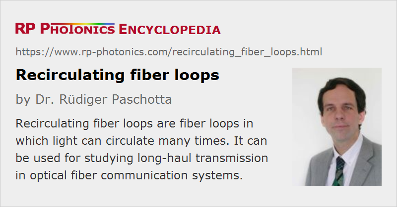

Recirculating Fiber Loops
Definition: fiber loops in which light can circulate many times
German: rezirkulierende Faserschleifen
Categories: fluctuations and noise, methods
How to cite the article; suggest additional literature
Author: Dr. Rüdiger Paschotta
A recirculating fiber loop [1] is a fiber-optical setup where light can do many round trips in an optical fiber. Its main use is for studying long-haul transmission in optical fiber communication systems. Even with a limited length of fiber, the propagation of signals over very long lengths can be studied by using multiple passes. This can help to investigate, e.g., the deleterious effects of noise and optical nonlinearities on the signal quality.
In laser technology, recirculating fiber loops are also used for the measurement of the linewidth of a laser, particularly in cases where this linewidth is very small (potentially below 1 kHz). The method is an extension of the self-heterodyne linewidth measurement, where the use of an extra reference laser can be avoided by deriving the reference signal from the laser output itself, using a long delay, which is provided by a long single-mode fiber. The problem with the self-heterodyne technique is that the required delay time is of the order of the inverse linewidth, and this leads to very large fiber lengths for linewidths of a few kilohertz only, or even below 1 kHz.
The basic idea of using a recirculating fiber loop is that a long delay can be provided by a moderately long fiber, if the light makes multiple round trips through that fiber. In order to keep the light from different round trips well separated, an acousto-optic modulator in the loop shifts the optical frequency by a certain amount (e.g. 100 MHz) in each round trip. As this frequency shift is much larger than the linewidth, the components corresponding to different numbers of round trips are well separated in the frequency domain. At the detector, beat notes of the original laser light with different frequency-shifted components can be used to measure their linewidths.
If there is no amplifying element in the loop, the losses from the acousto-optic modulator and from the fiber are significant, and the light intensity rapidly decays during several round trips in the loop. This strongly limits the number of round trips which can be utilized for the linewidth measurement. To remove this limitation, the effective loss of the loop can be strongly reduced by inserting a fiber amplifier in the loop (as shown in Figure 1). However, this introduces a new problem: even though the light components with different numbers of round trips are clearly separated in the optical domain, the beat signal from the detector has contributions from different pairs of these components, which in general can greatly modify the resulting beat spectrum. It has been shown [3] that for a suitable design of the loop, this effect can be effectively suppressed. Ultimately, the sensitivity of recirculating fiber loop will be limited by noise from the fiber amplifier. Other aspects to be considered are the fiber nonlinearity and the data processing for non-Lorentzian line shapes.
Questions and Comments from Users
Here you can submit questions and comments. As far as they get accepted by the author, they will appear above this paragraph together with the author’s answer. The author will decide on acceptance based on certain criteria. Essentially, the issue must be of sufficiently broad interest.
Please do not enter personal data here; we would otherwise delete it soon. (See also our privacy declaration.) If you wish to receive personal feedback or consultancy from the author, please contact him e.g. via e-mail.
By submitting the information, you give your consent to the potential publication of your inputs on our website according to our rules. (If you later retract your consent, we will delete those inputs.) As your inputs are first reviewed by the author, they may be published with some delay.
Bibliography
| [1] | H. Tsuchida, “Simple technique for improving the resolution of the delayed self-heterodyne method”, Opt. Lett. 15 (11), 640 (1990), doi:10.1364/OL.15.000640 |
| [2] | R. -M. Mu et al., “Comparison of theory and experiment for dispersion-managed solitons in a recirculating fiber loop”, J. Sel. Top. Quantum Electron. 6 (2), 248 (2000), doi:10.1109/2944.847760 |
| [3] | M. Han and A. Wang, “Analysis of a loss-compensated recirculating delayed self-heterodyne interferometer for laser linewidth measurement”, Appl. Phys. B 81, 53 (2005), doi:10.1007/s00340-005-1871-9 |
See also: linewidth, self-heterodyne linewidth measurement, amplifier noise, fiber loop mirrors
and other articles in the categories fluctuations and noise, methods
|  |
If you like this page, please share the link with your friends and colleagues, e.g. via social media:
These sharing buttons are implemented in a privacy-friendly way!